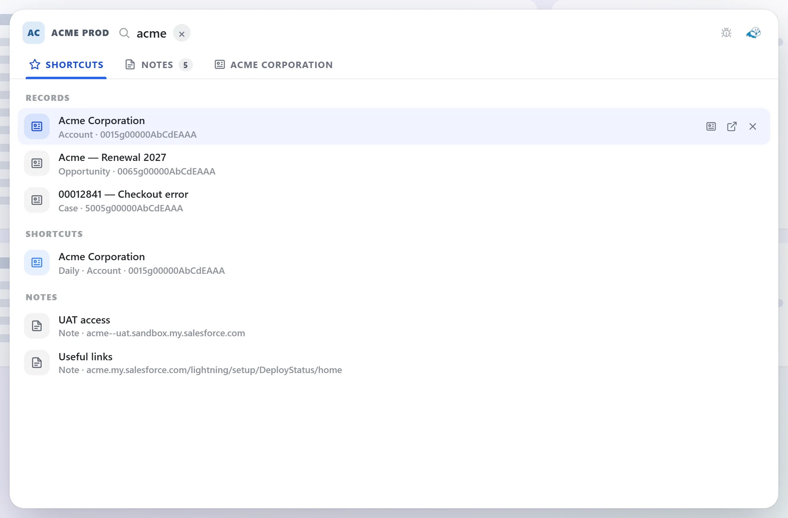

01
A command palette on every Salesforce page
Press Ctrl+K anywhere in Salesforce: jump to Setup pages, apps, records and saved links, run your scripts, open your notes. Search records as you type and keep your favourite destinations in colored groups.
- Shortcuts in groups, the same in all your orgs
- Record search with instant results
- Apps missing from an org are flagged, not broken
